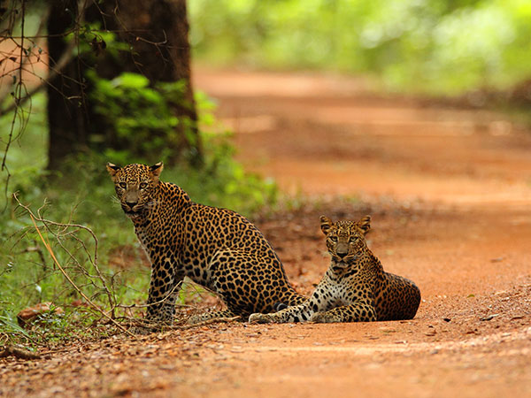

| National park | Animal name | Interesting fact | 1mage |
|---|---|---|---|
| Horton Plains | Sambar Deer | Large male Sambar deers weight up to 270–280 kg. |  |
| Sinharaja Forest | Leopard | The Sri Lankan leopard hunts by silently stalking its prey, until it is within striking distance, when it unleashes a burst of speed to quickly pursue and pounce on its victim. |  |
| Wasgamuwa National Park | Elephant | The elephants at Wasgamuwa are quite different to the ones at the other National Parks. They are completely wild and have limited exposure to safari jeeps |  |
| Minneriya National park | Birds | There are large number of water birds such as Lesser adjutant, Painted stork and Spot-billed pelican in addition to resident and migratory bird species totaling to 160. |  |